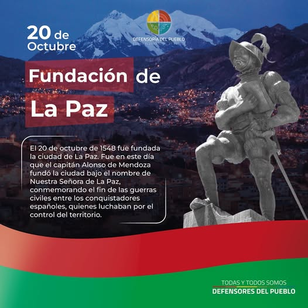
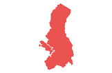
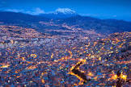

Fundación de La Paz
Por: Alex Miguel Huanquiri Garcia
La Paz (oficialmente Nuestra Señora de La Paz) es la sede de gobierno y centro financiero de Bolivia, además de ser la capital del departamento de La Paz. En la ciudad se albergan los órganos ejecutivo, legislativo y electoral. La Plaza Murillo, plaza principal de la ciudad, se encuentra a una altitud aproximada de 3636 m s. n. m. Ubicada en el oeste de Bolivia, a 68 km al sureste del lago Titicaca, La Paz está situada en un cañón creado por el río Choqueyapu, rodeada por las altas montañas del altiplano, entre ellas el nevado Illimani, cuya silueta ha sido el emblema más importante de la ciudad desde su fundación. La ciudad es la metrópoli más alta del mundo. Con una topografía accidentada, ofrece vistas únicas de la cordillera Real. Debido a su elevación, tiene un clima subtropical de altura, con veranos lluviosos e inviernos secos. La Paz es el centro político, académico y cultural más importante del país, además de ser una de las ciudades con mayor nivel de desarrollo sostenible en Bolivia. Según el censo 2024 de Bolivia, el municipio de La Paz tiene una población de 755 732 habitantes, siendo el tercer municipio más poblado del país. Es parte del área metropolitana de La Paz, con una población que asciende a 1.5 millones de habitantes, junto con la ciudad vecina de El Alto (de 885 825 habitantes) y otros municipios, como Viacha y Achocalla.
.png) |  |
 |  |